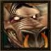

Kalanchoé
Age : 28
Sexe : Homme
Race : Tauren
Faction : Horde
Formation : Druide
Description : Une douce odeur de malt et de houblon émane de ce tauren au regard paisible et mélancolique. Mais sous ces airs sombres, Kalanchoé est un bon vivant amateur de bière, de coktails de bière, de chansons et de beuveries interminables.
Bien qu'il ne soit pas quelqu'un de violent par nature et n'ayant rien de personnel contre "les gens d'en face", il se laisse parfois entrainer par sa nature rocambolesque (et par l'abus de substances éthyliques) dans d'homériques combat!
Plus d'infos sur Kalanchoé >>>Lire le récit de Kalanchoé >>>
Promethee
Age : 19
Sexe : Homme
Race : Orc
Faction : Horde
Formation : Guerrier
Description : J'ai grandi au ceint d'une petite ferme sur les hauteur de tranchecolline. Malheureusement les affreux tranchecrin dans leurs soiffe de conquete et de sang tuere ma famille alors que j'etais en ville pour le ravitaillement. C'est ainsi que je commencais mon entrainement de guerrier afin d'assouvir ma vengence contre les tranchecrins, ceux de tranchecolline ont bien payer pour leurs crimes. Mais je pris aussi conscience du mal que cette especes pouvais faire aux differant peuples de la hordes. Mon education m'ayant appris a ne jamais frapper sans comprendre je me suis mis a parcourir les chemins pour frapper les tranchecrin (et leurs "freres" les dos hirsuts) partout ou ils causaient du tord a mes freres et soeurs. C'est sur ce chemin que j'ai croiser le maitre brasseur Kaalzkarn, il me recuilli au ceint de la guilde des brasseurs, c'est ma nouvelle famille. Aussi voici ou j'en suis a l'heure actuel et ce journal raconte mon histoire a partir de cette rencontre.
Mais haine des tranchecrin s'est appaisée mais m'a pousser sur le chemin d'une quete plus profonde, le sens du bien et du mal.
Ma rencontre avec les brasseurs me pousse a une autre quete, etre digne d'eux et prouver ma valeur.
Voila qui je suis.
Promethee orc vert sur le chemin de l'apprentissage
Plus d'infos sur Promethee >>>Lire les 13 récits de Promethee >>>